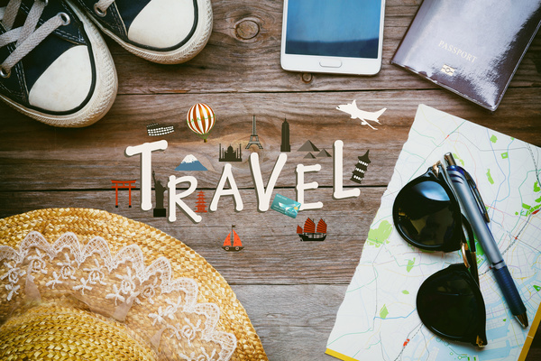

Security & Health
1. Check-in with your doctor and insurance carrier. Double check and make sure that you have all of the proper vaccinations and that you have renewed all essential prescriptions. Also, ask you medical insurance provider if your policy applies overseas for emergencies. If it doesn’t, and you want to add extra coverage, consider supplemental insurance.
2. Bring copies of your passport. If your passport gets stolen or lost you want to be sure that you can still get back into the country, or be able to prove your citizenship.
3. Leave a copy of your passport. For extra backup, leave a copy of your passport at home or with someone you trust. Consider making an electronic copy you can store in your email account as well.
4. Register with your embassy. If there’s a problem in the country, this will make it easier for your government to contact you and get you to safety.
Money
5. Look up the monetary conversion before you go. Finding out that one Danish Krone is equal to just 19 cents … bad surprise. Make sure you do your math before you travel to get a sense of where the conversion rate is at.
6. Make sure your credit card will work in the country you're visiting. European banks have switched almost completely to the more secure chip-and-PIN technology, and fewer businesses abroad are accepting the outdated magnetic-strip cards.
7. Go to a bank or ATM in the country you’re visiting. The conversion centers in the airport or around the city tend to be huge rip-offs. You won’t get charged as many fees at the ATM or the bank, and the conversion will be exact.
8. Always have local cash. Not every place takes credit cards. Especially important places like trains or buses.
9. Call your bank or credit card provider. Sometimes banks think that fraud may be occurring if transactions are suddenly happening in Bali when you’re from Jersey, and they will turn off your card as a security measure.
10. Check the country’s entrance/exit fees. Some countries require travelers to pay in order to enter or leave the country. These fees are not included in the price of your airline ticket, and can range from $25 to $200.
Local Research
11. Buy tickets now for places you know you want to visit or see. By buying in advance you’ll be able to skip more lines, and find more deals targeted toward you.
12. Get guidebooks. Guidebooks usually include maps, keywords or phrases, and give you enough detail on certain sites that you won’t need to purchase the pamphlet at the venue. And download apps before you travel. Avoid downloading charges from your wireless carrier and get your apps before you leave.
13. Research events going on while you’re there. This will help you make sure that you’re not missing the best events going on in the city -- fun things like festivals, ceremonies and natural events. Also be sure to research as a few national dishes to try. You don’t want to leave the country without experiencing what its known for.
Electronics
14. Bring a charger adapter. Countries have different size plugs and voltage. So if you want to use your iPod, make sure you can charge it.
15. Check the voltage of your electronics. From my own experience I know that nothing is worse than having an adapter and still not being able to use a blow-dryer or a straightener because the voltage isn’t high enough for that country.
16. Activate your phone’s global capabilities. There's usually a charge for doing this, but it is much less than the roaming charges you’ll get if you don’t.
17. Download Travelzoo app. The Travelzoo app can help you find great deals in a variety of countries, and has options from local deals to transportation options.
Luggage & packing
18. Pack an extra set of clothes in your carry-on bag. Don’t be one of those travelers decked out in J’adore Paris apparel because the airline lost your luggage and you have nothing else to wear.
19. To check a bag or not to check bag. Each airline has its own set of guidelines as to how many bags can be checked or carried on for free. Make sure to look up what your airline’s rules are to avoid any incremental fees.
20. Bring snacks. Traveling abroad is fun, but eating in a foreign country can sometimes become a task. Bring small snacks that will tide you over until you find that perfect restaurant or food cart.